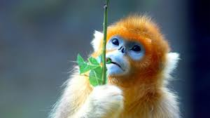
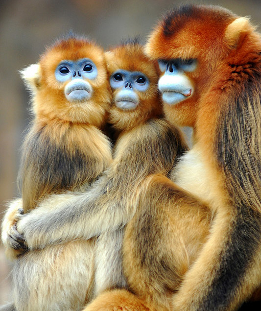
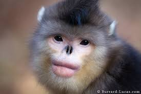
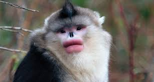
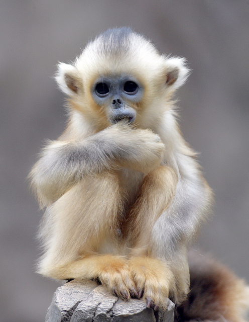
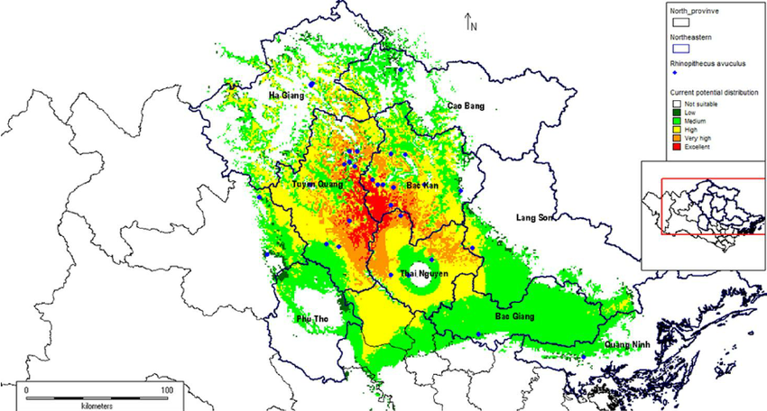

What is the Snub-nosed Monkey
The Snub-nosed Monkey, commonly scientifically referred to as the Rhinopithecus roxellana, is an endangered species found in Central and Southwest China. These golden-brown monkeys are known for their unique nose and blue tinted face. With the absence of nasal bones and their nostrils upturned, Snub-nosed monkeys can withstand extreme cold of their climate and frostbite. In addition to their facial qualities, Snub-nosed monkeys have different characteristics based on their gender. Males of the species are double the size of females; however, they both have long guard hairs and average life span of twenty-three to twenty-six years old.
What is the Snub-nosed Monkey's Habitat/Diet?
The Snub-nosed monkey's habitat is forests in the snowy mountains of Sichuan, Huebei, Gansu, and Shaanxi. Being the only primates in the area, Snub-nosed monkeys are constantly changing their diets due to climate changes. In the summer and spring, they are herbivores with a diet consisting of berries, fruits, and vines. On the other hand, Snub-nosed monkeys change their diet to lichens, bark, twigs, and insects during the scarce winter. If you want to spot a Snub-nosed monkey your best bet is in the sky as they spend most of their time in the trees swinging up to three miles in search of food!
     Conservation
Sadly, Snub-nosed monkeys are endangered and at risk for extinction due to their increased habitat loss and poaching. By the 1960s, the population began a sudden decrease and remains at less than 250 individuals today. Therefore, the Snub-Nosed Monkey Conservation Project was established in 1997 by Munster Zoo, the Zoological Society for the Conservation of Species and Populations, and the Westphalian Society for Conservation. These services provide data on animal populations and forest status. Since 2004, these conservation tactics have been supervised by biologist Sonja Wolters.